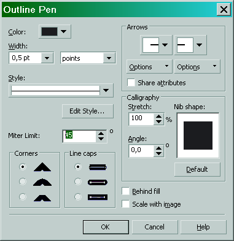

Как сделать шрифт жирнее?
Alisa84 / 02.11.2011, 15:59/00:41
Форум:
Версия программы:
15.1.0.486/488/489
Я совсем новенькая в этом. Расскажите пожалуйста есть ли какой-то способ как сделать жирнее мой шрифт? Кнопочка "B" не активна. Сейчас вышла из ситуации накладыванием на верх копии шрифта который немного сдвинут. Но это не выход.
Помогите пожалуйста.
Alisa84, а аконтовку не пробовали добавить?
Спасибо большое.
Кстати. Если нужно сделать шрифт пожирнее для порезки из плёнки, то НЕОБХОДИМО сделать ещё пару манипуляций
stasys, от неприятных моментов спасает Miter Limit:45
Des425, а шо это значит (митер лимит)?
mmgs, Miter Limit - отношение длины схода к толщине линии.
Это в окошке Outline Pen

Чем больше значение Miter Limit, тем меньше вероятность возникновения "неприятных моментов". Но увлекаться сильно тоже не следует, так как окантовка на острых углах при больших значениях Miter Limit может срезаться не очень красиво.
Des425 , АФИ - большое спасибо!